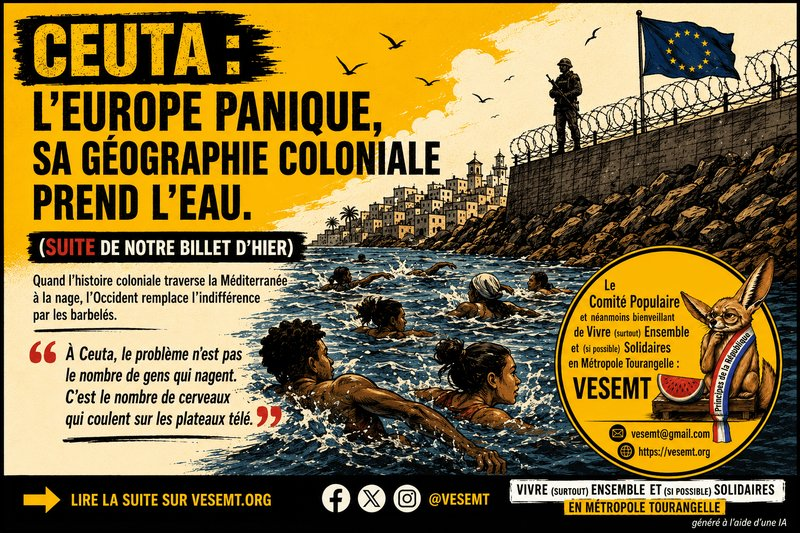

Suite de notre billet d’hier : « Le réchauffement climatique est devenu un problème… depuis qu’il touche les Blancs ? ») 
Hier, nous pointions du doigt le privilège géographique de l’Europe, championne du monde pour consommer les ressources du Sud mais amnésique face à sa dette écologique.
Aujourd’hui, l’actualité s’invite à Ceuta. Même hypocrisie, autre décor : quand l’histoire coloniale traverse la Méditerranée à la nage, l’Occident remplace l’indifférence par les barbelés.
« À Ceuta, le problème n’est pas le nombre de gens qui nagent. C’est le nombre de cerveaux qui coulent dans l’espace politico-médiatique occidental »
Depuis quelques jours, les chaînes d’info tournent en boucle sur l’enclave de Ceuta. 60 000 personnes franchissent les barbelés ou coupent à travers l’eau. À écouter les experts de droite en costume trois pièces, c’est l’Apocalypse. L’invasion des Marcheurs Blancs, mais en version bronzée. On les entend déjà soupirer : « L’Espagne est débordée, notre belle civilisation va s’effondrer sous le poids des claquettes-chaussettes ».
C’est le grand classique du cynisme occidental : ils adorent l’Histoire quand elle est gravée dans le marbre de leurs musées, mais ils appellent l’armée dès qu’elle prend vie, qu’elle met une combinaison de plongée et qu’elle passe la douane.
« On a posé nos valises en Afrique sans demander de visa, mais on veut que le voisin frappe avant d’entrer. »
Rappelons la géographie à nos professionnels de la pureté identitaire. Ceuta et Melilla, ce sont deux morceaux d’Espagne plantés en plein Maroc. Deux comptoirs coloniaux oubliés au moment de rendre les clés du continent. L’Europe a posé son parasol en Afrique, a braqué les ressources locales, et a dit : « C’est chez nous, mais restez sagement derrière le grillage tranchant ».
Quand des milliers de jeunes Marocains décident de venir voir le propriétaire, Pedro Sánchez hurle à la « violation de l’intégrité territoriale ». Giorgia Meloni veut bloquer Schengen. Et en France, Laurent Nuñez quintuple les flics à la frontière espagnole. C’est l’effet domino de la frousse politique : dès qu’un Noir ou un Arabe court un peu trop vite, l’Europe remet ses œillères et sort les boucliers. « Non mais ils entrent de force ! C’est illégal ! »
Ah, pardon ! C’est vrai que quand l’Europe a colonisé la moitié du globe, elle a gentiment fait la queue au guichet de Rabat et de Dakar. Elle a attendu le tampon réglementaire avant de piller l’uranium et de découper les frontières à la règle. de L’amnésie sélective est définitivement le plus grand talent de l’occident.
« L’Europe externalise ses frontières : on paie la matraque du voisin pour garder nos mains blanches. »
Regardons les choses en face. Ceuta n’est pas une invasion, c’est le service après-vente d’un business hypocrite. L’Union européenne refile des milliards au Maroc pour faire le sale boulot. On sous-traite la violence. On finance le flic d’en face pour qu’il cogne à notre place pendant qu’on donne des leçons de droits de l’homme à l’ONU. C’est l’écologie du sang : loin des yeux, loin du cœur, tant que la plage reste propre pour nos vacances.
Mais dès que le garde-barrière lâche la matraque pour une querelle diplomatique, le château de cartes s’effondre. Et là, c’est le festival de la panique morale. Donald Trump tweete depuis son canapé pour dénoncer une « invasion ». Marine Le Pen crie au grand chaos.
Pendant ce temps-là, déjà 34 êtres humains sont morts noyés cette semaine (Il s’agit ici du chiffre officiel d’hier, aujourd’hui vu qu’ils sont plus ça devient évidemment plus vague avec « quelques dizaines). 34 vies brisées contre une digue européenne. Mais pour nos éditorialistes, le vrai drame national, c’est le cours de l’action Euro-tunnel et la baisse du tourisme. L’humanité a coulé, le capitalisme regarde l’horizon.
« Le capitalisme et sa bourgeoisie adorent le travail au noir, mais ils détestent le travailleur noir. »
Au Comité Populaire de VESEMT, comme au FUIQP, à la Marche des Solidarités et à la Coordination des Sans-Papiers, nous refusons ce logiciel de la haine. Ces jeunes qui débarquent en claquettes ne viennent pas voler le pain des Français. Ils viennent chercher la couleur de l’avenir que nos multinationales ont cramé chez eux.
Une fois arrivés partout en France et évidemment dans notre chère métropole, son jardin, , le système les transforme en « sans-papiers ». Des fantômes administratifs indispensables pour porter vos briques sur les chantiers, nettoyer vos bureaux à l’aube et livrer vos sushis sous la pluie. C’est le sommet du cynisme : être un criminel clandestin pour le ministère de l’Intérieur, mais un rouage indispensable pour maintenir le pouvoir d’achat des beaux quartiers.
La régularisation globale n’est pas une fleur, c’est le remboursement d’un vol historique. L’Espagne a esquissé un pas cette année avec sa réforme, portée par la pression des mouvements comme « RegularizacionYa ».
Mais à la moindre vague humaine, les gouvernements européens paniquent, ressortent les charters et la « Force Frontière d’intervention rapide ». Chassez le naturel colonial, il revient au galop de charge.
« Du Moyen-Orient à l’Amérique du Sud : le désordre mondial est un produit d’exportation occidental. »
Ne nous trompons pas d’échelle : Ceuta n’est que la vitrine maritime d’un impérialisme globalisé qui tourne à plein régime. Ce cynisme décomplexé qui pousse les corps à la nage, c’est le même qui bombarde le Moyen-Orient sous prétexte de « propager la démocratie » avant de piller le pétrole. C’est le même qui joue au Monopoly géopolitique en Ukraine (dans un registre tout aussi impérialiste et décomplexé) transformant les populations en chair à canon pour des intérêts de puissance qui les dépassent. C’est encore le même qui, en Amérique du Sud, privatise l’eau, arrache le lithium et soutient des régimes corrompus par le biais de multinationales voraces. L’Occident passe son temps à foutre le feu chez les autres tout en se plaignant que la fumée vienne salir ses rideaux. L’exil n’est jamais un choix, c’est le service après-vente de vos guerres et de vos traités de libre-échange.
« On ne pourra pas construire des murs assez hauts pour cacher la misère qu’on a financée. ».
On peut continuer à militariser la mer, à fortifier l’Europe et à compter les cadavres. On peut écouter nos politiques nous expliquer que la solution, c’est de tirer dans le tas ou de transformer la Méditerranée en cimetière à ciel ouvert.
Mais l’Afrique ne bougera pas. Et tant que nos traités économiques asymétriques pilleront le Sud pour maintenir le confort climatisé du Nord, la jeunesse viendra réclamer sa part de l’ombre. On ne stoppe pas la mer avec des barbelés.
La seule issue digne et politiquement sérieuse, portée par de nombreux collectifs partout en France, c’est la liberté de circulation, la fermeture des centres de rétention et la régularisation de tous les sans-papiers.
L’Histoire nous regarde, et pour l’instant, elle ferme les yeux de honte.
Abd-El-Kader AIT-MOHAMED
- Locataire HLM de la Tour de la Galboisière et « Fier de l’être ».
- Membre du Comité populaire et néanmoins bienveillant de Vivre (surtout) Ensemble et (si possible) Solidaires en Métropole Tourangelle (VESEMT).
- Président de l’Association VESEMT.
Sources de réflexion
- Récits et analyses des événements de Ceuta (juillet/août 2026).
- Manifeste du Front de l’Immigration et des Quartiers Populaires (FUIQP) et communiqués de la Marche des Solidarités.
- Communiqués des collectifs locaux de Touraine (Soutien aux migrants 37, collectifs d’hébergement d’Indre-et-Loire).
- Campagne internationale #RegularizacionYa pour les droits des personnes migrantes.
- Frantz Fanon, Les Damnés de la Terre.
Tags: #Ceuta #Immigration #JusticeDecoloniale #SansPapiers #Antiracisme #FUIQP #TouraineSolidaire #CynismeDeDroite #DetteEcologique #VESEMT #MarcheDesSolidarités
Commentaires